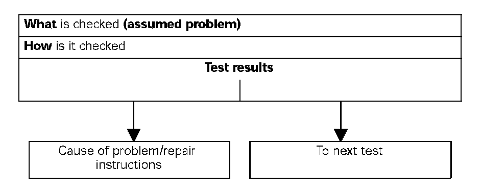
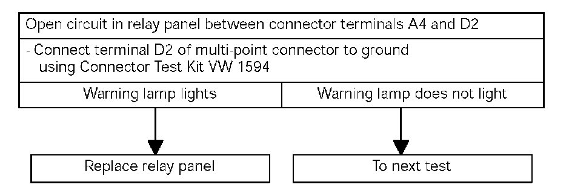

Diagnostic Aids
Explanation Of Troubleshooting Procedures
Starting with the reported problem, troubleshooting procedures show step-by-step what is checked and how it is checked in order to find the problem in the quickest and most reliable way. If several causes (of a problem) are possible in one system, a test procedure is used for diagnosis.
Structure of a Test step:

Example of a troubleshooting procedure:
